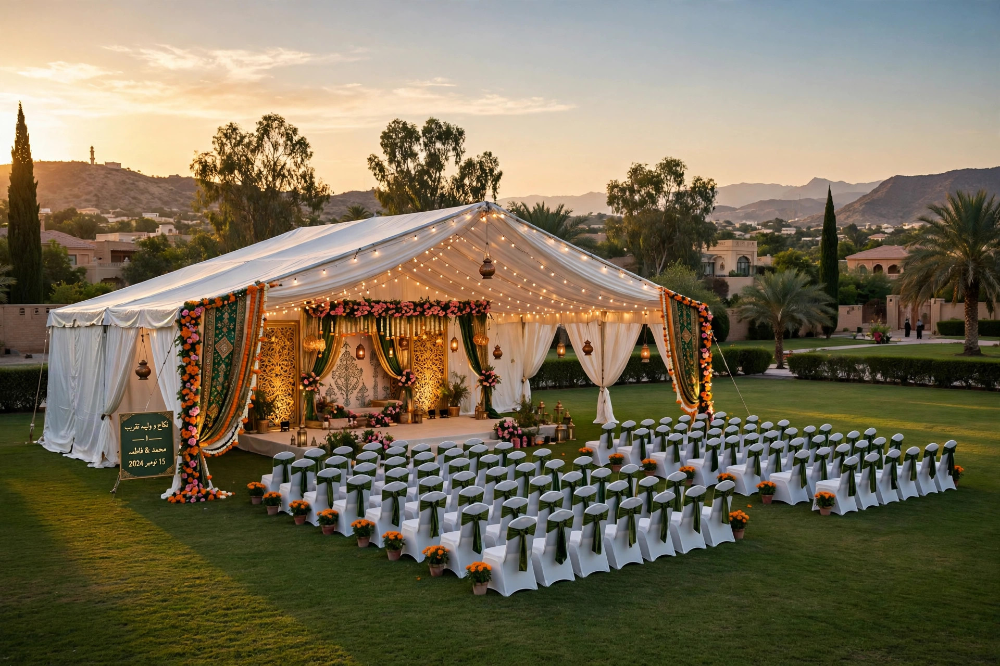
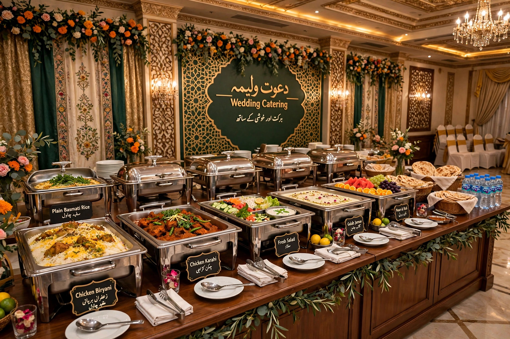

NearOffer › Articles › Wedding Halls Guide
FAISALABAD GUIDEWedding Halls in Faisalabad: The Complete Booking Guide
It usually starts the same way. The date is fixed, the guest list grows a little more every evening, and someone in the family finally asks the question everyone has been avoiding: "Hall book kiya?" In Faisalabad, that one question can decide whether your wedding feels smooth and generous — or rushed, crowded and quietly stressful. A venue is not just a roof and some chairs. It sets the distance your guests travel, the quality of the food they remember, the photographs you keep, and a very large part of the total budget.
The good news is that Faisalabad has real choice. The city has everything from compact halls inside residential areas to large marquees on its outer roads, plus hotel banquets for families who want everything handled in one package. The families who end up happiest are not always the ones who spent the most. They are the ones who compared properly, asked the awkward questions early, and put everything in writing before paying the booking amount. This guide is built to help you do exactly that — step by step, area by area.
The short answer: Most wedding venues in Faisalabad charge either per head (a per-guest rate built around the food menu) or a flat rent for the hall or marquee, with catering arranged separately. Peak-season dates are commonly booked two to six months ahead. The right choice depends on three things: your realistic guest count, the area most of your guests will travel from, and which event you are planning — nikah, baraat or walima. Everything else in this guide expands on those three decisions.
1. Where Faisalabad's wedding venues actually are
Venue hunting gets much easier once you stop thinking hall by hall and start thinking area by area. Faisalabad's wedding venues cluster in a few recognisable zones, and each zone has its own character, capacity range and traffic reality.
Canal Road and Jaranwala Road hold many of the city's larger halls and hotel banquets. These venues tend to have the biggest guest capacities, proper parking lots and a more formal feel. They suit large baraat and walima events, but remember that guests coming from the western side of the city will cross the whole city to reach them — fine for a walima, harder for a weekday nikah.
Satiana Road and the Eden side are marquee country. This side of Faisalabad is where you will find lawns, farm-style venues and decorated marquees with open-air space. Families who want a spacious evening event, room for children to move, and a decorated entrance for photographs usually shortlist here first.
Peoples Colony, D Ground and the inner-city areas offer mid-sized halls that are easy for most guests to reach. Parking is tighter and capacities are smaller, but for a nikah or a modest walima, an inner-city hall often beats a grand venue on the far side of town. Madina Town, Gulberg and Model City have similar neighbourhood-scale options.
Our practical advice: shortlist by area first, hall second. Pick the two areas where most of your guests actually live, visit three or four venues in those areas on the same day, and compare them while the impressions are fresh. That one habit saves more money and stress than any negotiation trick.

2. Hall, marquee or hotel — which suits which event
These three venue types are not better or worse versions of each other. They solve different problems, and matching the venue type to the event is where most families either save money or waste it.
A wedding hall is a permanent indoor space with fixed seating capacity, in-house chairs and tables, and usually a standard stage. Halls are predictable: weather cannot hurt you, air-conditioning and heating are built in, and the staff run the same event every week. For a nikah — where the guest list is smaller, the mood is dignified and timing matters — a good hall is usually the safest and most economical choice.
A marquee is a decorated tent structure, usually on a lawn. Marquees feel grander and more flexible: you can often fit more guests, arrange your own layout, and decorate more freely. They are popular for baraat and walima events with big guest counts. The trade-offs are real, though — weather, dust, insects in summer, and generator dependence all sit on your side of the table. A marquee without a clear rain and power plan is a risk, not a bargain.
A hotel banquet bundles venue, catering and service into one contract. It costs more, but one team answers for everything, which is why hotels suit families hosting out-of-city guests or a walima where the hosts cannot supervise ten separate vendors. Whichever type you choose, visit it while another event is running if the venue allows — a hall at 8pm with 700 guests inside tells you more than an empty hall at noon ever will.

3. How venue pricing really works
Almost every Faisalabad venue quote you receive will be built on one of two models, and comparing a quote from one model against the other is the single most common source of confusion.
The per-head model. The venue charges a rate per guest, driven mainly by the menu: the welcome drink, the main dishes, the dessert, and sometimes extras like tea or a live counter. The headline rate looks simple, but the real bill is the rate multiplied by your final guest count. This model suits families who want the venue to handle food end-to-end. Its hidden trap is the head-count clause: some venues bill a minimum guaranteed number whether those guests come or not, and charge a higher rate beyond an agreed ceiling. Ask exactly how the final count is taken — by plates served, by chairs set, or by your declared number.
The flat-rent model. You rent the hall or marquee for the event, and arrange catering, decor and other services yourself or through the venue's separate partners. The rent looks cheaper — until you add the caterer, the generator fuel, the extra decor and the service staff. This model suits families with a trusted caterer of their own, or a mehndi-style event where the food is simpler.
Whichever model you choose, get clear answers on what is included. A typical quote may bundle the stage, basic decor, seating, sound system and parking — while fresh flowers, upgraded stage design, extra dishes, additional lighting and photography points sit outside it. Neither model is dishonest; the problems start when a family compares one venue's all-in per-head rate with another venue's bare rent and concludes the second is "half the price." It is not. It is half the scope. Compare like with like, line by line, and the cheapest honest quote usually wins on merit.
Payment normally moves in stages: a booking amount to lock the date, a part payment before the event, and settlement after the final count. Never let the stages live only in conversation — the questions section below covers what to capture in writing.

4. The 10-point booking checklist
Take this list with you on every venue visit. If a venue cannot answer a point clearly, that is your answer about the venue.
- Real capacity vs your real list. Count both families, then add a margin. A hall that "fits 800" with chairs touching is a 650-guest hall in comfort.
- Parking. Count the actual spaces, and ask where cars go when the lot fills. Guest frustration begins in the parking line, not the hall.
- Power backup. Is there a generator, does it carry the full load including air-conditioning, and who pays for fuel? In Faisalabad, this is not a detail — it is the event.
- Season comfort. AC capacity for a summer baraat, heating or closed sides for a winter marquee. Visit and feel it, don't just ask.
- Bridal room and family space. A proper bridal room, a family seating corner and clean washrooms in sufficient number.
- Kitchen and caterer policy. In-house catering only, or outside caterers allowed? Is there a kitchen-use or serving charge for outside food?
- Timing rules. When can decor teams enter, when must the event end, and are there music or timing restrictions in that area?
- What the stage includes. Which decor in the photos is standard, and what exactly costs extra — in writing.
- Payment schedule. Booking amount, instalments, final settlement method, and how the final guest count will be verified.
- Date-change and cancellation terms. Life happens. Know the cost of moving your date before you need to move it.
Families tell us the same thing again and again: the venues that welcome this checklist are the venues that run good events. The ones that dodge it are telling you how your event night will feel.
5. Questions to ask before you pay anything
Before any booking amount changes hands, sit with the venue manager and ask these directly. Write the answers on the booking slip itself.
- "What is the minimum guaranteed guest count, and how is the final count verified?" — This decides your real bill more than the quoted rate does.
- "If our date has to move, what happens to our booking amount?" — Get the date-change policy before you need it, not after.
- "Which items in this decorated hall are included, and which are extras?" — Photograph the standard setup you are shown, with permission, and keep it with your booking papers.
- "Who is our one contact person on the event day?" — A named person with a phone number, not "the office."
- "What happens if the generator fails or it rains on our marquee?" — A serious venue has a serious answer.
- "Can we do a food tasting, and is it the same kitchen team on our date?" — Taste the actual menu tier you are buying.
- "Are there any other charges at all — service, cleaning, extra hours?" — Ask for the full list, then ask once more.
None of these questions is rude. Venues answer them every week for careful families, and a good manager respects a family that asks. The families who feel shy about asking are, in our experience, the ones who end up surprised on the night.
6. Common mistakes Faisalabad families make
Booking from photographs alone. Venue photos are taken empty, decorated at their best, in perfect light. Your event will have 700 people, a queue at the buffet and a generator humming outside. Visit during a real event whenever possible.
Counting only one family's guests. The guest list that matters is both families plus the mohalla, the office and the "we cannot possibly not invite them" list. Under-counting is the most expensive mistake in the per-head model, because the settlement argument happens on the happiest night of your year.
Choosing the far corner of the city to save a little. A slightly cheaper hall that most guests reach after a 45-minute drive will cost you attendance, punctuality and mood. Area first, hall second — it bears repeating.
Leaving the walima venue for last. Families pour energy into the baraat and treat the walima as an afterthought, then discover the good venues are gone for their date. Book both events in the same week of hunting, even if the walima feels far away.
Keeping everything verbal. The booking amount was paid, the manager was kind, and nothing was written. Three months later, memories differ — about the menu, the stage, the count. A one-page written booking with the agreed items listed protects both sides, and good venues are happy to provide it.
7. How to compare venues on NearOffer
NearOffer exists to make exactly this comparison easier. In the Wedding Halls & Marquees category, venues in Faisalabad list themselves with their area, their location and the packages or booking offers they are running — so instead of driving across the city collecting verbal quotes, you can shortlist by area, check which venues are verified, and contact the venue directly to book. The booking itself stays between you and the venue; NearOffer is the discovery layer that helps you find and compare, with venues marked verified once their details have been checked.
As more Faisalabad venues join, this guide will be updated with area-by-area comparisons — and venues will be able to sponsor detailed guides about their own halls, always clearly labelled as sponsored, so you can tell honest information from advertising at a glance.
Conclusion
A wedding venue is the largest single decision in most Faisalabad wedding budgets, and it rewards exactly one thing: careful comparison before money moves. Shortlist by area, match the venue type to the event, understand whether you are comparing per-head or flat-rent quotes, walk the checklist, and put the answers in writing. Do those five things and the venue stops being a source of family stress and becomes what it should be — the beautiful, well-run backdrop to a day everyone remembers fondly. We wish you a blessed celebration, and a booking process with no surprises in it.
Frequently asked questions
How much does a wedding hall in Faisalabad cost?
There is no single honest figure, because most venues price per guest. Your total depends on the guest count, the menu tier, the area and the season. A per-head quote that looks higher can cost less overall than flat rent once catering, decor and power backup are added — always compare the full scope, not the headline rate.
How early should we book a wedding hall in Faisalabad?
For peak wedding season dates, good venues are commonly booked two to six months ahead, and the most popular halls go earlier. Off-season and weekday dates are far more flexible. The safest approach is to book both the baraat and walima venues in the same week, as soon as your dates are fixed.
Which is better for a walima — a hall or a marquee?
It depends on your guest count and the season. A hall is predictable: fixed capacity, built-in climate control and no weather risk, which suits most walima events. A marquee feels grander and fits larger lists, but needs a confirmed rain and generator plan. For very large walimas in mild weather, a well-run marquee is hard to beat.
Can we bring our own caterer or decorator to a Faisalabad wedding hall?
Sometimes, yes — but policies differ by venue. Some halls allow outside caterers with a kitchen or serving charge; others insist on in-house catering, especially in per-head packages. Decorators are usually more flexible than caterers. Ask before booking, and have the agreed policy written on your booking slip to avoid event-day arguments.
What should be written in the wedding venue booking agreement?
At minimum: the date and event timings, the venue and hall name, the agreed guest count and how the final count is verified, the menu or rent scope item by item, what decor is included, the payment schedule, and the date-change and cancellation terms. One clear page, signed by both sides, prevents almost every common dispute.
Related topics you might like
- Wedding Halls & Marquees on NearOffer — browse Faisalabad venues by area
- All NearOffer articles and guides
- Kapra / Cloth category — wedding shopping offers across Faisalabad's bazaars